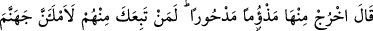
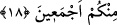

18. Allah buyurdu: Haydi, yerilmiş ve kovulmuş olarak oradan çık! Andolsun ki,
onlardan kim sana uyarsa, sizin hepinizi cehenneme dolduracağım!
Allah Teâlâ İblis’e hitaben “buyurdu: “Haydi sen yerilmiş ve kovulmuş olarak
oradan” cennetten “çık.” Kendisinde benlik görmesinden ve kibrinden ötürü İblis,
cennetten ve bütün hayırlardan uzaklaştırılmıştır. Ondan sonra yaratılan bütün varlıklar
için İblis’in başına gelenlerden çıkarılacak dersler vardır.
“Andolsun ki onlardan sana kim uyarsa” Âdem’in neslinden kim senin peşinden
gelirse “(bilsin ki) sizin hepinizden” senden, senin soyundan ve Âdem (a.s.)’ın kâfir
olan zürriyetinden “cehennemi dolduracağım.”
Bir hadiste şöyle buyurulmuştur: “Cehennem ve cennet birbirleriyle tartıştılar.
Cehennem: “Bana zorbalar ve büyüklenenler girecek.” dedi. Cennet ise: “Bana da
güçsüzler ve miskinler girecek.” diye cevap verdi. Allah Teâlâ cehenneme: “Sen
benim azabımsın. Seninle dilediğime azab ederim.”, cennete de: “Sen de benim
rahmetimsin. Seninle dilediğime rahmet ederim. Sizden her birinizi dolduracaklar
var.” buyurdu.[9]
Esasen şeytana tâbî olanlar, onun insanlara yaklaştığı dört cihetten insanlara gelenler
ve onun emirlerine uyanlardır.
Akıllı olan, İblis’e tâbî olmaktan sakınsın. Allah’a itaat ve kullukta gayret etsin ki
cehenneme girenlerle birlikte ateşe atılmasın.
Bir hadiste şöyle buyurulmuştur: “Kıyamet günü her mü’min için, bâtıl dinlere tâbî
olanlardan bir kişi takdim edilir ve ona şöyle denilir: “Bu, senin kurtuluşun için
cehenneme verilen fidyedir.”[10]
Bu hadiste Allah’ın kullarına bahşettiği sonsuz lütuflara ve O’nun mü’minlere olan
ikramına işaret vardır. Kendisine kul olanları Allah öylesine aziz tutuyor ki, sonunda
düşmanlarını vererek dostlarını kurtarıyor.
Ya da hadis-i şerifte bahsedilen “fidye”nin anlamı şöyledir: Allah Teâlâ cehenneme,
kendisini insanlar ve cinlerle dolduracağını va‘detmiştir. Cehennem Allah’tan va’dini
yerine getirmesini isteyecek, Allah da müşrikleri ve âsî mü’minleri oraya atarak onu
razı edecektir. İşte bu, mü’minlere karşı fidye gibidir.
Bazıları ise “fidye”nin anlamının şöyle olduğunu söylemişlerdir: Mü’minler sırattan
geçerken kâfîrler onlara kalkan olurlar. Mü’minler ateşten onlarla korunurlar. Böylece
kâfîrler, mü’minlere fidye olurlar.
Büyüklerden bir zat şöyle demiştir: Vefat edip defnedildiği gece rüyamda Ebu Bekir
b. Hüseyin Mukrî’yi gördüm. Ona: “Ey üstaz, Allah sana nasıl muamele etti?” diye
sordum. “Allah Teâlâ, benim yerime filozoflardan Ebü’l-Hasan Amiri’yi fidye kıldı ve: